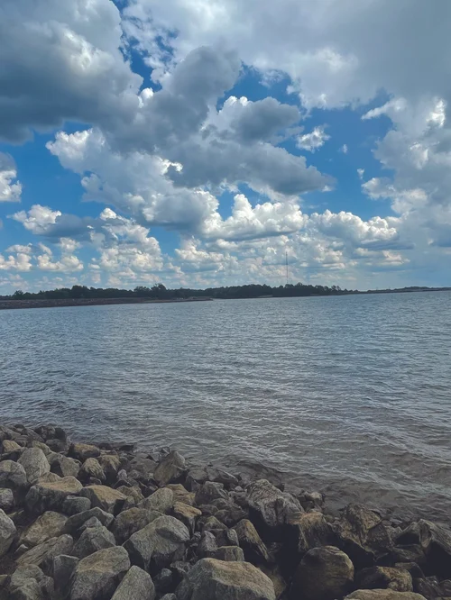
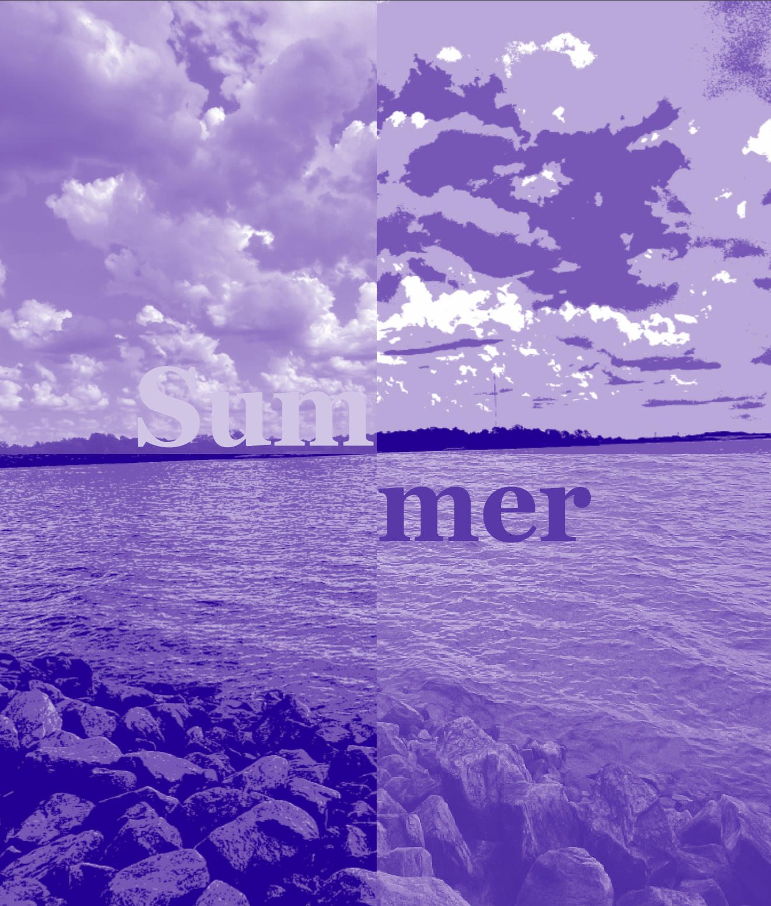
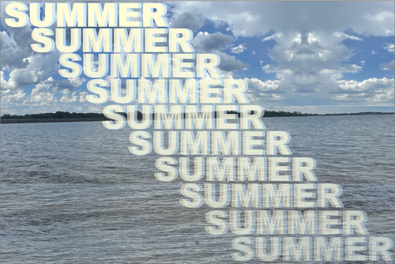

Color Models
For the Duotone Color Model, I had to use a photo taken by me and transform it using two tones. To create a more dramatic and surreal effect I experimented with symmetry and reflections to make the composition feel more layered and visually interesting. I also had to include a word within the composition, so I used the word “Summer” to connect with the calm atmosphere of the water and clouds. This part of the assignment helped me learn how color combinations and layout choices can completely change the mood of an image.
For the 1 Color Model, I had to take the photo and turn it into a one-color model while also incorporating posterization into parts of the image. I chose a landscape photo and experimented with different shades of purple to create contrast and depth while still keeping the image visually simple. I also had to include a word within the composition, so I used the word “Summer” as part of the design to keep consistency throughout the project. This assignment helped me understand how reducing an image to one color can still create a strong visual impact through value and composition.
For the final section, I created a four-color model using the same original photograph. I focused on layering text and transparency while using multiple tones from the image to create depth and movement across the composition. I repeated the word “Summer” throughout the design to make typography a major visual element instead of just text. This assignment taught me how combining multiple colors, opacity, and repetition can create a more dynamic and balanced digital composition.